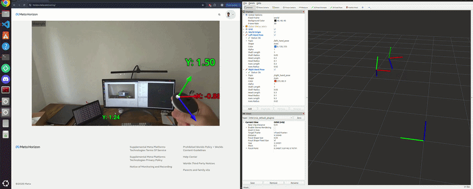

Projects

VR Hand Pose Tracking to ROS 2 Bridge
Meta Quest 3 XR application built in Godot 4.6 that streams real-time hand/controller tracking data over WebSocket to a ROS 2 pipeline, remapping coordinate frames and publishing live hand poses visualised in RViz2.
View Project →
SO-101 Robot ARM Teleoperation
Python scripts for leader-follower teleoperation of the SO-101 6-DOF robot arm using Feetech servos. The leader arm is auto-detected by supply voltage and the follower mirrors joint positions in real-time at up to 200 Hz.
View Project →
Imitation Learning with VLA Models
Fine-tuned SmolVLA and ACT models on the SO-101 robotic arm for pick-and-place tasks using human teleoperation demonstrations, exploring Vision-Language-Action models for imitation learning.
View Project →
VLM Fine-tuning with Blind Judge Evaluation
Fine-tuned LLaVA-Next vision-language model using ORPO achieving 1.15 point improvement with blind LLM judge evaluation system.
View Project →
Vision-based Multimodal RAG System
Built multimodal RAG system using ColPali for document retrieval with vision language models, indexing PDF documents and answering queries about multimodal content.
View Project →
Multi-agentic AI for Procurement System
Developed an AI Agentic procurement system utilizing LLM-based agents to automate product discovery, evaluation, and comparison across multiple e-commerce platforms.
View Project →
LiDAR 3D Obstacle Detection on Point Cloud Data
Designed a LiDAR-based pipeline for 3D obstacle detection using PCL, segmenting road planes with RANSAC and clustering outlier points using KDTree.
View Project →
Traffic Signs Detection and Classification
Developed and integrated models for traffic sign detection and classification using TensorFlow and YOLO, achieving 97.41% accuracy and 64.7% mAP.
View Project →